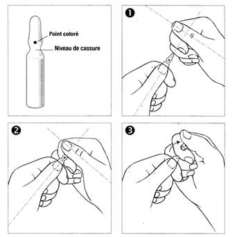

RÉSUMÉ DES CARACTÉRISTIQUES DU PRODUIT
ANSM - Mis à jour le : 23/08/2012
OXYTOCINE AGUETTANT 5 UI/1 ml, solution injectable
2. COMPOSITION QUALITATIVE ET QUANTITATIVE
Oxytocine ............................................................................................................................................. 5 UI
Pour 1 ml de solution injectable.
Une ampoule de 1 ml contient 5 UI d'oxytocine.
Pour la liste complète des excipients, voir rubrique 6.1.
Solution injectable.
4.1. Indications thérapeutiques
· Insuffisance des contractions utérines, en début ou en cours de travail.
· Chirurgie obstétricale (césarienne, interruption de grossesse….): obtention d'une bonne rétraction utérine.
· Atonie utérine consécutive à une hémorragie de la délivrance.
4.2. Posologie et mode d'administration
Insuffisance des contractions utérines au début ou au cours du travail:
Perfusion I.V. lente de 5 U.I. dans 500 ml de sérum glucosé isotonique.
La vitesse de perfusion doit être strictement contrôlée et adaptée à la réponse utérine, en commençant par 2 à 8 gouttes par minute (correspondant à 1 à 4 mU.I. ou 0,1 à 0,4 ml par minute) avec un maximum de 40 gouttes/minute (soit 20 mU.I. ou 2 ml par minute).
A chaque fois que cela sera possible, le rythme de la perfusion sera contrôlé par une pompe de haute précision. Si les contractions régulières ne sont pas établies après perfusion de 500 ml (soit 5 U.I.), la perfusion sera interrompue et pourra être rétablie le jour suivant.
Chirurgie obstrétricale (césarienne, interruption de grossesse…): obtention d'une bonne rétraction utérine: 5 à 10 U.I. par voie IV lente.
Rarement, en cas de césarienne, la voie intra-murale peut-être utilisée à la dose de 10 à 15 U.I.
Atonie utérine consécutive à une hémorragie de la délivrance:
5 à 10 U.I. par voie IM ou 5 U.I. par voie IV lente.
· Hypersensibilité à la substance active ou à l’un des excipients ;
· Dystocies ;
· Fragilité ou distension excessive de l'utérus ;
· Hypertonie utérine ou souffrance fœtale quand l'accouchement n'est pas imminent ;
· Troubles cardiovasculaires sévères et pré-éclampsie ;
· Prédisposition à l'embolie amniotique (mort fœtale in utero, hématome rétroplacentaire) ;
· Placenta prævia.
4.4. Mises en garde spéciales et précautions d'emploi
En cas de surdosage, risque d’hypertonie utérine et de souffrance fœtale réversibles (cf. Précautions d’emploi).
Précautions d’emploi
L’oxytocine ne doit pas être administrée en injection intraveineuse rapide en raison du risque d’hypotension immédiate transitoire avec flush et tachycardie réflexe.
Afin d’éviter des changements significatifs au niveau de la pression artérielle et de la fréquence cardiaque, l’oxytocine doit être utilisé avec prudence chez les patients prédisposés à une ischémie myocardique due à une maladie cardiovasculaire préexistante (telle qu’une cardiomyopathie hypertrophique, maladie valvulaire et/ou maladie ischémique du cœur incluant les vasospasmes des artères coronaires).
L’oxytocine doit être administrée avec prudence aux patients présentant un « syndrome QT long » ou des symptômes apparentés.
En cas d’accouchement dirigé, l’injection directe I.M., I.V. est formellement déconseillée.
Ce médicament doit être administré par perfusion I.V. et sous contrôle médical très strict. Il est indispensable de monitorer l’activité de l’utérus et l’état du fœtus du début à la fin de l’accouchement, pour prévenir une souffrance fœtale ou une hypertonie utérine réversible à l’arrêt du traitement.
En cas d’hémorragie de la délivrance et atonie du post-partum, il est nécessaire de s’assurer de la vacuité utérine avant d’administrer le médicament.
Les prostaglandines peuvent potentialiser l’effet de l’oxytocine et réciproquement. En conséquence, l’ocytocine ne doit pas être administrée simultanément aux prostaglandines car cela peut entrainer une sur-stimulation en l’absence de vacuité utérine.
L’induction pharmacologique du travail par dinoprostone ou oxytocine augmente le risque de coagulation intra-vasculaire disséminée (CIVD) en post-partum, dans de très rares circonstances.
Le risque est augmenté d’autant plus que la femme présente d’autres facteurs de risque de CIVD tels que : 35 ans ou plus, complications pendant la grossesse et âge gestationnel supérieur à 40 semaines.
Chez ces femmes, l’oxytocine ou autre alternative thérapeutique, doit être utilisée avec prudence et le praticien doit être alerté par des signes de CIVD (fibrinolyse).
Très rarement, une perfusion trop prolongée d’oxytocine peut entraîner un effet antidiurétique qui se manifeste par une intoxication par l’eau transitoire avec céphalées, nausées, vomissements et convulsions. Le traitement est symptomatique (en particulier, réduction des apports liquidiens et correction des troubles électrolytiques).
4.5. Interactions avec d'autres médicaments et autres formes d'interactions
Sans objet.
4.7. Effets sur l'aptitude à conduire des véhicules et à utiliser des machines
Sans objet.
Très rarement, une perfusion trop prolongée de ce médicament peut entraîner un effet antidiurétique qui se manifeste par une intoxication par l’eau transitoire avec céphalées, nausées, vomissements et convulsions. Une hyponatrémie est également possible chez le nouveau-né.
Une hypotension immédiate transitoire avec flush et tachycardie réflexe peut être observée après injection intraveineuse rapide.
Ce changement hémodynamique rapide peut provoquer une ischémie myocardique en particulier chez les patients ayant une maladie cardiovasculaire préexistante.
Une injection intraveineuse rapide d’oxytocine à des doses s’élevant à plusieurs U.I. peut aussi conduire à l’allongement de l’intervalle QTC.
Exceptionnellement, possibilité de rash, réaction anaphylactoïde, voire de choc anaphylactique.
En cas de surdosage, les symptômes pouvant apparaitre sont les suivant :
Lorsque l’oxytocine est utilisée en perfusion IV, l’administration de doses élevées peut entrainer :
· Une souffrance fœtale (ralentissement du rythme cardiaque, hypoxie, présence de méconium dans le liquide amniotique) ;
· Une hyperstimulation utérine qui peut entrainer ou conduire à une hypertonicité (risque de contracture, une altération des tissus mous ou une rupture utérine, et exceptionnellement une rupture placentaire et/ou une embolie amniotique). Lors de l’apparition des signes ou symptômes d’un surdosage lors d’une administration IV continue d’oxytocine, il est nécessaire d’arrêter immédiatement la perfusion d’oxytocine et de mettre en place une oxygénothérapie chez la mère.
En cas d'intoxication par l'eau, le traitement est symptomatique ; en particulier, il est essentiel de réduire les apports liquidiens, de corriger les troubles électrolytiques.
5. PROPRIETES PHARMACOLOGIQUES
5.1. Propriétés pharmacodynamiques
Classe pharmacothérapeutique : HORMONE POST-HYPOPHYSAIRE, code ATC : H01BB02.
(hormones systémiques, hormones sexuelles exclues).
L’oxytocine est un ocytocique de synthèse, de constitution et de propriétés pharmacologiques identiques à celles de l'hormone ocytocique post-hypophysaire naturelle. Il augmente la fréquence et l'intensité des contractions utérines.
5.2. Propriétés pharmacocinétiques
Après administration I.V ou I.M, l'oxytocine agit rapidement avec une latence d'action inférieure à 1 minute pour la voie I.V et de 2 à 4 minutes pour la voie I.M, la réponse utérine dure de 30 à 40 minutes après injection IM et peut être plus courte après administration I.V.
En perfusion intraveineuse continue, aux doses appropriées, la réponse utérine est progressive et atteint un plateau en 20 à 40 minutes. Les taux plasmatiques d'oxytocine sont comparables à ceux observés au cours de la première période du travail spontané. Après arrêt ou diminution sensible de la vitesse de perfusion (en cas de stimulation excessive), l'activité utérine décroît rapidement, mais peut être facilement maintenue à un niveau inférieur acceptable.
L'oxytocine possède une demi-vie courte (de 3 à 17 minutes) ce qui permet le contrôle aisé de l'effet utérotonique par perfusion I.V. La liaison aux protéines plasmatiques est faible.
L'élimination est essentiellement hépatique et rénale.
Moins de 1 % de la dose administrée est excrété sous forme inchangée dans les urines. Le volume de distribution apparent est d'environ 0,3 I/kg dans l'espèce humaine et la clairance métabolique est de l'ordre de 20 ml/kg/min. y compris chez la femme enceinte.
5.3. Données de sécurité préclinique
Sans objet.
Chlorure de sodium, acétate de sodium trihydraté, acide acétique glacial, eau pour préparations injectables.
En l'absence d'études de compatibilité, ce médicament ne doit pas être mélangé avec d'autres médicaments.
2 ans.
6.4. Précautions particulières de conservation
A conserver à une température comprise entre +2°C et +8°C.
6.5. Nature et contenu de l'emballage extérieur
Ampoule en verre incolore (Type I) de 1 ml. Boite de 1, 3, 5, 10, 50 ou 100 ampoule(s).
6.6. Précautions particulières d’élimination et de manipulation
Mode d'emploi pour l'ouverture des ampoules:
Une ampoule bouteille de type OPC (One Point Cut) est caractérisée par une zone de fragilité au niveau du col de l'ampoule, repérée par un point coloré. Pour ouvrir correctement l'ampoule, il est indispensable d'exercer une pression au niveau de cette zone selon la procédure suivante:
1 - D'une main, tenir fermement le corps de l'ampoule en laissant dépasser la tête de l'ampoule, point coloré face à vous.
2 - De l'autre main, saisir la partie supérieure de l'ampoule, index posé derrière le col de l'ampoule et le pouce sur le point coloré comme indiqué par le schéma (les deux pouces sont ainsi perpendiculaires).
3 - En tenant fermement chaque partie de l'ampoule, casser d'un coup sec en exerçant une pression vers le bas.

7. TITULAIRE DE L’AUTORISATION DE MISE SUR LE MARCHE
Laboratoire AGUETTANT
1, rue Alexander Fleming
69007 Lyon Cedex
8. NUMERO(S) D’AUTORISATION DE MISE SUR LE MARCHE
· 378 565-1: ampoule en verre incolore (Type I) de 1 ml. Boite de 1.
· 378 566-8: ampoule en verre incolore (Type I) de 1 ml. Boite de 3.
· 570 517-1: ampoule en verre incolore (Type I) de 1 ml. Boite de 5.
· 570 518-8: ampoule en verre incolore (Type I) de 1 ml. Boite de 10.
· 570 519-4: ampoule en verre incolore (Type I) de 1 ml. Boite de 50.
· 570 520-2: ampoule en verre incolore (Type I) de 1 ml. Boite de 100.
.:
9. DATE DE PREMIERE AUTORISATION/DE RENOUVELLEMENT DE L’AUTORISATION
[à compléter par le titulaire]
10. DATE DE MISE A JOUR DU TEXTE
[à compléter par le titulaire]
Sans objet.
12. INSTRUCTIONS POUR LA PREPARATION DES RADIOPHARMACEUTIQUES
Sans objet.
Liste II.